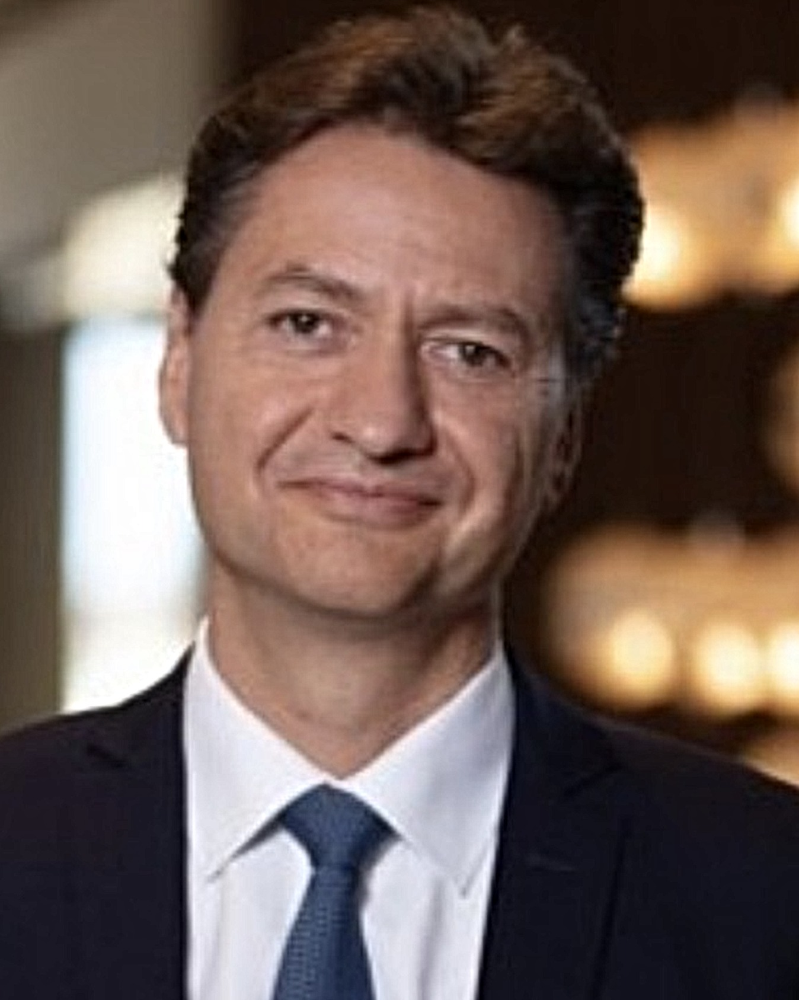

Franck BONIN
Fondateur d’OSEIS Gestion Privée — Family Office

Expert en stratégie patrimoniale internationale
Franck Bonin est un expert reconnu en stratégie patrimoniale internationale et en gestion de fortune pour les clients UHNWI. Fort de près de 27 ans d’expérience au sein du groupe Société Générale, il a exercé des responsabilités de premier plan en France, en Europe et en Suisse, dans des contextes de transformation, de croissance et de repositionnement stratégique.
Il a notamment dirigé, de 2019 à 2024, Société Générale Private Banking Suisse, une entité représentant 11 milliards de CHF d’actifs sous gestion, 300 collaborateurs et un chiffre d’affaires de 110 millions de CHF. Sous sa direction, la banque a opéré un redressement financier majeur et renforcé son positionnement auprès d’une clientèle UHNWI internationale.
Avant son expérience suisse, il a été un acteur clé du développement de la Banque Privée en France pendant plus de 20 ans. Il a successivement exercé les fonctions de directeur associé en ingénierie patrimoniale, puis de banquier privé dédié aux UHNWI et enfin de directeur commercial France. Il a contribué à l’essor de la clientèle entrepreneuriale, en apportant des réponses sur mesure aux problématiques de transmission, d’investissement, de gouvernance et d’internationalisation du patrimoine. Il a structuré des offres complexes, accompagné les grandes familles d’affaires dans leurs projets de long terme, et piloté la montée en compétence des équipes commerciales (350 collaborateurs, 50 Mds € d’encours).
Spécialiste de l’approche internationale, il a également piloté des dispositifs intégrés entre les principales places financières européennes (Suisse, Luxembourg, Monaco, France) et contribué à la stratégie européenne du groupe via une approche unifiée des clients fortunés.
Diplômé de SKEMA (Master Ingénierie du Patrimoine), d’INSEAD (Programme Growth) et d’IMD (Programme LEAD), il a été distingué en 2022 comme Best CEO Private Banking Switzerland par WealthBriefing. Fondateur d’OSEIS Gestion Privée, il intervient comme Family Office auprès de familles fortunées et comme enseignant en école de commerce au sein de mastères spécialisés SKEMA, KEDGE, FINENCIA sur les sujets d’expertise internationale, allocation d’actifs et stratégie patrimoniale.